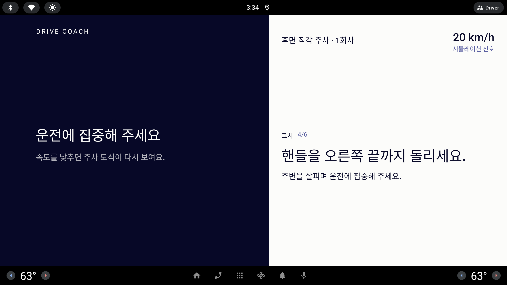

— 차량 신호로 연습 과정을 측정하는 차량용 앱 「드라이브 코치 — 화내지 않는 조수석」
| 제안 팀 | 사고치조 (발표 전준영) | 작성 일자 | 2026년 10월 7일 |
|---|---|---|---|
| 분류 | 운전 연습 보조 · 차량용 소프트웨어(AAOS) | 출품 | MOAH 2026 모비스 SW 해커톤 |
| 현재 상태 | 시제품 — 사내 차량 신호 환경에서 코드 수정 없이 빌드·실행 확인4, 실제 도로 검증 전 | ||
사고가 몰리는 주차(특히 후진)와 운전 첫 100일을 혼자서도 반복 연습할 수 있도록, 두려운 상황을 과제로 나누고 차량 신호로 과정을 측정해 가이드 → 힌트 → 평가 순으로 도움을 줄여 가는 차량용 연습 보조 도구를 제안한다. 운전자는 정차 중에만 화면을 조작하며, 기록 공유 범위는 운전자가 정한다.
초보·장롱면허 운전자에게 가장 어려운 순간은 주차와 운전 초기다. 가족이 옆에서 가르치면 감정 소모가 크고, 학원 연수는 비용 부담이 있다. 제안 팀은 아이 때문에 다시 운전을 시작한 장롱면허 10년차 가족을 돕는 데서 출발했다.
| 수치 | 내용 | 출처 |
|---|---|---|
| 30.2% | 자동차보험 차량 물적 사고 중 주차 중 사고 비율(10건 중 3건). 그 주차 사고의 53.8%가 후진 중 | 보험사·보험개발원 공동 조사1 |
| 41% | 초보운전자 첫해 사고 중 처음 100일 안에 일어난 비율 | 현대해상 교통기후환경연구소 연구2 |
| 50~60만 원 | 학원 도로연수 10시간 비용(약) | 2025년 언론 보도 기준3 |
→ 사고가 가장 많은 순간(주차·첫 100일)을, 화내지 않고 반복해 줄 조수석이 없다는 것이 문제의식이다.

기록 공유는 운전자 동의 기반이며 범위를 3단계 중 운전자가 고른다. 진단서와 오른쪽 활용처는 예시이고, 현재 실제 전송·계약은 없다.
신호마다 실신호·시뮬레이션·미측정을 리포트에 구분 표시한다. 정차 후 AI 총평에는 회차 요약 지표만 보내며 원시 시계열은 보내지 않는다.
| 단계 | 공유 범위 | 활용 예시(가정) |
|---|---|---|
| 1 총점만 | 숙련·안전 두 점수만 | 제휴 시험장 대여료 할인 |
| 2 항목별 | 구간 수·조향·기어·근접 등 수치 | 보험사 안전운전 특약 심사 대상 |
| 3 원시 신호 | 속도·조향각 시계열까지 | 적성검사 연계·연구 참여 대상 |